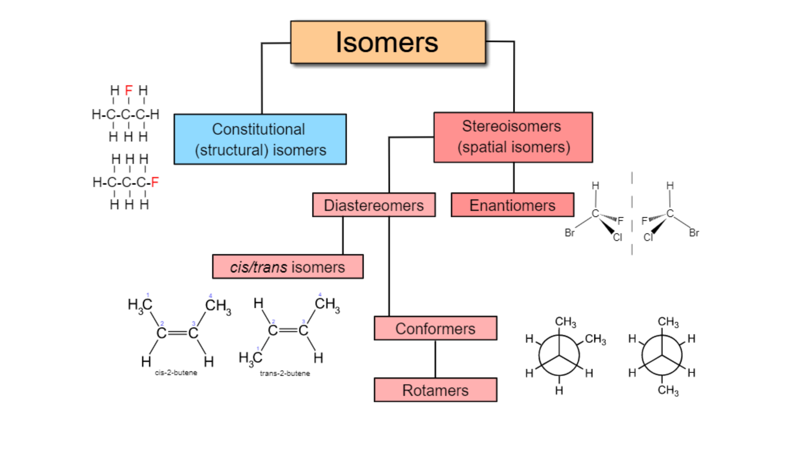

Chapter 2: Stereochemistry - Optical Isomers#
1. Introduction#
Stereochemistry—the three-dimensional arrangement of atoms in molecules—is fundamental to drug discovery because biological systems are inherently chiral (specific 3D shaped) environments. Proteins, nucleic acids, and carbohydrates exist predominantly as single stereoisomers, making them exquisitely sensitive to the 3D shape of drug molecules. A drug’s stereochemistry can determine whether it binds to its target protein, gets metabolized safely, or causes harmful side effects.
Molecules with the same molecular formula but different arrangements of atoms are are called isomers.
There are a few types of isomers, but we will be focusing on stereoisomers.

Figure adapted from sourceStereoisomers can be further subdivided into:
Enantiomers (a type of optical isomers)
Diastereomers (a type of geometric isomers)
This section will guide you through the fundamental principles of stereoisomerism and chirality. You will learn to identify chiral centers and identify optical isomers.
2. Key Concepts and Definitions#
Chirality: A geometric property where a molecule cannot be superimposed on its mirror image, like left and right hands. * Chiral molecules lack an internal plane of symmetry.
Enantiomers: A pair of molecules that are non-superimposable mirror images of each other. They have identical physical properties (melting point, boiling point) except for how they interact with polarized light and other chiral environments.
Chiral Center (Stereocenter): Most commonly a carbon atom bonded to four different substituents, creating the potential for mirror-image forms. Also called an asymmetric carbon.
Racemic Mixture: A 50:50 mixture of both enantiomers (±), which shows no net optical rotation because the two enantiomers’ effects cancel out.
3. Main Content#
3.1 Understanding Chirality: The Handedness of Molecules#
Chirality arises when a molecule lacks superimposability with its mirror image. The most common source is a tetrahedral carbon atom bonded to four different groups. To determine if a molecule is chiral, look for:
Presence of a chiral center - typically C with four different substituents
Non-superimposable mirror images - like gloves, the left doesn’t fit the right
📋 Instructions:
- Rotate the left molecule (click and drag) to any orientation you like
- Try to rotate the right molecule to make it look identical to the left one
- Challenge: Can you superimpose them perfectly?
R-Enantiomer
CHFClBrI
🔄 Click and drag to rotate
Chiral Center: Carbon with F, Cl, Br, I (4 different groups)
S-Enantiomer
CHFClBrI (Mirror Image)
🔄 Always rotatable - try to match the left!
Mirror Image: Same atoms, opposite spatial arrangement
💡 What You Should Discover
You cannot superimpose them! These molecules are non-superimposable mirror images (enantiomers). No matter how you rotate the right molecule, you cannot make all four substituents align with the left molecule simultaneously.
Key insight: Chirality means "handedness" - like your left and right hands, these molecules are mirror images but cannot be superimposed. The R-enantiomer and S-enantiomer are fundamentally different molecules with potentially different biological activities.
In drug discovery: One enantiomer might be therapeutic while its mirror image could be inactive or even harmful! This is why understanding chirality is crucial.
📋 Instructions:
- Select the chiral centres in the molecule
Remember that chiral centres are atoms that are attached to four different groups of atoms
Lactic Acid
Pseudoephedrine
Atorvastatin
Isomers with chiral centres are called optical isomers or also known as enantiomers. You will learn more later.
3.2 Enantiomers: Identical Yet Different#
Enantiomers are non-superimposable mirror-image pairs with similar properties such as melting and boiling point.
However, they are different in optical rotation (how they rotate light, either + or - in magnitude) and more importantly, their biological activity. For example, chiral molecules can taste and smell differently (because olfactory receptors are chiral).
🔄 Interactive Challenge: Try to Superimpose These Molecules
The (+)-carvone molecule on the left is fixed. Try rotating the (−)-carvone molecule on the right (click and drag) to make it look identical to the left one. Can you succeed?
(+)-Carvone
Smells like caraway
🔒 FIXED - Cannot rotate
(−)-Carvone
Smells like spearmint
🔄 Click and drag to rotate
💡 What You Should Observe
You cannot superimpose them! These molecules are non-superimposable mirror images (enantiomers). While you can rotate the right molecule to make some parts align with the left, you'll always find other parts pointing in opposite directions.
Key insight: This is fundamentally different from conformational isomers, which CAN be superimposed through rotation. Enantiomers require breaking and reforming bonds to interconvert—they are truly different molecules, not just different orientations.
4. Practical Applications#
The Thalidomide Tragedy and Modern Drug Safety: The thalidomide disaster is the most cited example of stereochemistry’s importance. The (R)-enantiomer was an effective sedative, while the (S)-enantiomer was a potent teratogen. Because the two forms could interconvert in the body, administering the “safe” enantiomer was not enough. This led to strict regulations by agencies like the FDA, now requiring that drug candidates with chiral centers be tested for the activity and toxicity of each individual stereoisomer.
Chiral Drugs: L-DOPA for Parkinson’s Disease: Parkinson’s disease is characterized by a deficiency of the neurotransmitter dopamine. Dopamine itself cannot cross the blood-brain barrier, but its precursor, L-DOPA, can. L-DOPA is the chiral form of DOPA. Its enantiomer, D-DOPA, is biologically inactive and can cause side effects. This is a classic case where a single, pure enantiomer is marketed as a drug, demonstrating the principle of eurasiomeric pharmacology.
5. Summary and Key Takeaways#
In this section, we’ve explored the fundamental concepts of stereochemistry and identify chiral centres
Key Takeaways:
Chirality is fundamental to drug-receptor interactions - biological targets are chiral and can distinguish between enantiomers, often leading to dramatically different pharmacological effects.
Enantiomers are mirror images with identical physical properties but different biological activities. One may be therapeutic while the other is inactive or even harmful.
Chiral centers create stereoisomers - most commonly a carbon with four different substituents.